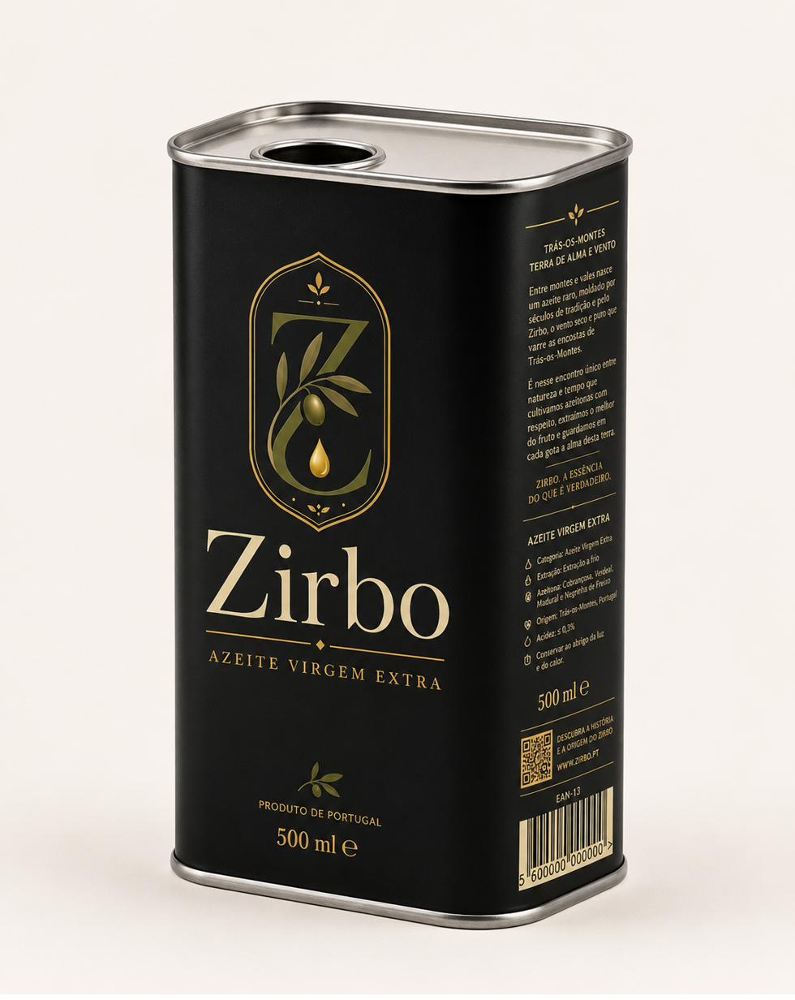
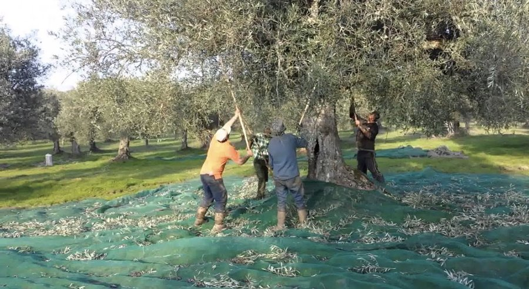
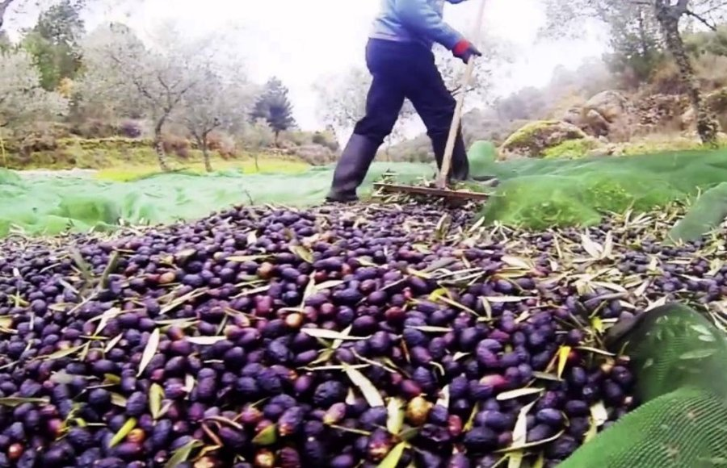
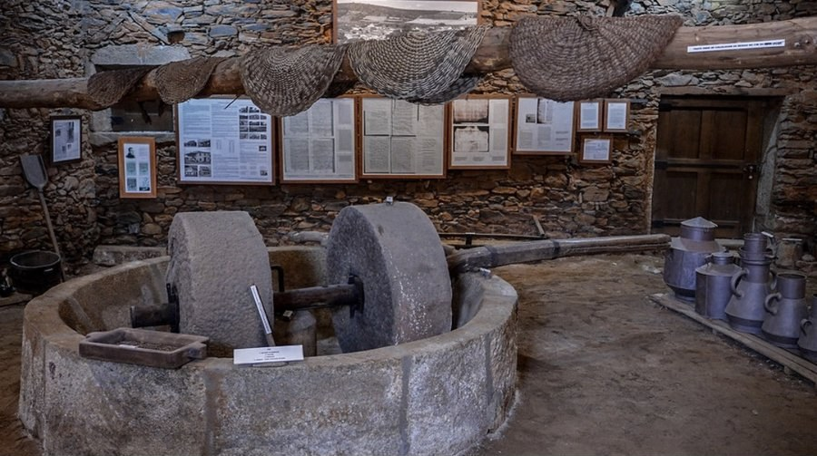

Perfil sensorial, ficha técnica e a razão por trás de uma escolha pouco convencional: a lata.

Virgem extra da Terra Fria Transmontana, em lata de alumínio que protege da luz e conserva o azeite. Colheita manual, prensa tradicional, produção limitada e numerada.
Disponível para reserva — lote piloto de 1.000 latas numeradas.
Um perfil equilibrado: verde na cor, com aroma a folha e erva cortada, notas de amêndoa fresca e um amargor e picante bem marcados — sinais de uma azeitona colhida cedo, típicos dos azeites transmontanos de qualidade.
Escolhemos a lata de alumínio, não a garrafa de vidro: veda por completo a luz — o maior inimigo do azeite — e protege da oxidação, conservando aroma e propriedades durante mais tempo.
*Valores-alvo, sujeitos a confirmação pela ficha técnica final do lote.
A lata de alumínio é a embalagem tradicionalmente usada para azeites de gama alta em contextos onde a proteção da luz é prioridade absoluta — a exposição à luz é uma das principais causas de degradação do azeite, oxidando os seus compostos e alterando aroma e sabor ao longo do tempo. Ao contrário do vidro, mesmo escuro, a lata bloqueia totalmente a luz e o ar, prolongando a vida útil do produto sem necessidade de conservantes.
É também uma escolha prática: mais leve, mais resistente ao transporte e a quedas, e totalmente reciclável.
O Zirbo segue os rituais que sempre definiram o azeite em Trás-os-Montes. A colheita é manual, azeitona a azeitona ou por vareijo tradicional — nunca por vibração mecânica em massa —, o que permite escolher apenas o fruto no ponto certo de maturação e evita esmagá-lo antes da hora.


A prensagem é feita num lagar tradicional da região, à escala pequena, seguindo o mesmo princípio de sempre: extrair o azeite sem pressa e sem atalhos. É um processo lento, dependente do tempo, da mão de quem colhe e de quem prensa — e é exatamente por isso que se produz tão pouco. Não é escassez artificial; é o limite natural de fazer as coisas como sempre se fizeram.
